Now that we have created our simple model, we need to publish it to a development database. Indeed, we haven't generated anything so far and our 2 tables are not accessible by anyone, except through the neXtep Designer IDE. Everything we have created is stored in the neXtep Designer repository, a database schema which stores and manages your development and controls the versions of the developed entities.
First, you need to tell designer where your development database is located. Designer will never create database users for you, therefore you optionally need to create a new user and to grant the appropriate rights.
To define a new development connection, you need to activate the “Connection” view at the lower right of your workbench :
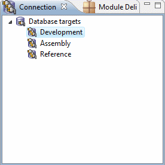
Right-click on the development target and select “Create connection” from the popup menu. The following dialog will come up :
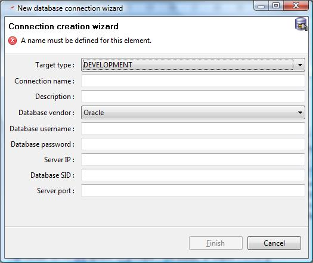
This dialog allow you to enter the settings of your new database connection. Fill-in your connection properties to tell Designer how to connect to your development database. The following screenshot is an example of the settings we used for the development database of this tutorial. You can see that we are using a local Oracle database and we connect to the user tutdev (which is empty).
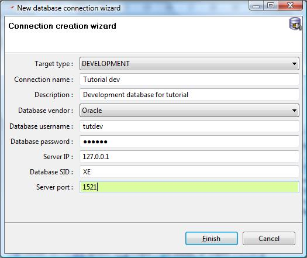
Click finish to create the development connection. The new connection will appear in the Connection view just under the Development connection tree item.
It is important to know that neXtep Designer will not only generate SQL statements. It will generate scripts which should be run with the database client program since they contain comments, prompts, error handling, which are not “pure” SQL. Therefore designer need to know where your database command-line client is located to delegate the submission of a generation. It will typically correspond to the location of sqlplus and mysql programs respectively for Oracle and MySQL databases. To define the location of the executable command-line program, go into the Window menu from the neXtep designer menu bar and select Preferences. Expand the neXtep Designer node and select Generator subitem.
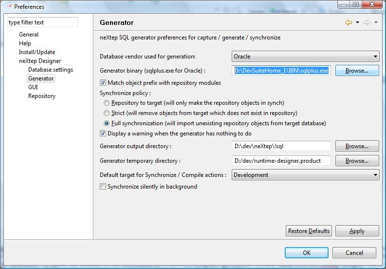
Edit the Generator binary field by clicking on the Browse... button and select the exectuable corresponding to your database vendor. You might also customize the Generator output directory and the Generator temporary directory which corresponds to (respectively) the directory where deliveries will be generated and to the temporary scripts generations. We will talk about deliveries in a later section of this tutorial. For now, your development scripts will be generated in the temporary directory. Click OK when you have finished your customization.
You are now ready to generate your development to the development database. To perform the generation, right click on the Tutorial view item of the view explorer, or on the Tutorial container item and select Synchronize. Depending on the item you click on, full or partial synchronization will be performed. For now, since we only have one container, clicking on the view or container node has exactly the same effect. You could also click on the synchronize icon from the tool bar which will synchronize the whole view.
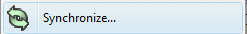
A synchronization preview dialog window will come up to show you differences between your development in the IDE and the contents of your targeted development database.
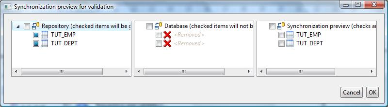
This is a 3-part window. The first part on the left corresponds to elements present in the repository. This is what you have developed and what you see in the view explorer. The part in the middle is the content of the targeted database connection. Since we have an empty user, elements of the repository does not exist in the database and a red cross is displayed to tell you that these repository elements don't exist in the database. Eventually, the rightest part in the preview of what your development database will look like after your generation. This is still time to cancel the generation if the generation preview does not satisfy your needs.
Click OK to continue with the generation process. NeXtep designer will then generate the scripts needed to upgrade your development database. Note that those scripts will be opened in an editor to let you check and / or edit the generation contents before submitting it to the development database :
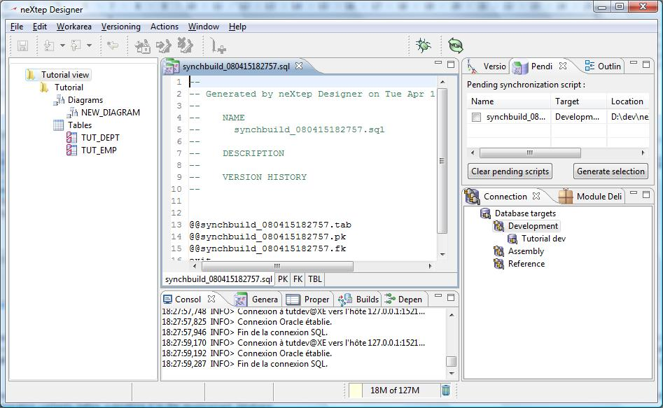
You can now see the SQL multi editor displaying the result of the script generation. Note that the generation engine has generated a “wrapper” script which delegates actions to other scripts depending on the contents. You could therefore see a tab script which contains tables definitions, a pk script which contain primary keys definitions and a fk script with foreign keys definitions. All these scripts are accessible through the same SQL editor by the tabs you could see at the bottom of the editor (PK, FK, TBL). If you click on the TBL tab, you will see the following script contents :
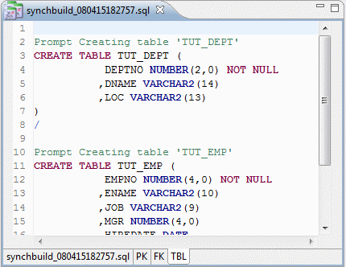
You can review the script to verify the SQL which has been generated (you will do it for sure on your first generations, and will do it less when you will gain trust in the generation engine).
Note that the generation scripts have been created in the folder specified in the Generator temporary directory which you may have customized earlier. You can see a list of all scripts generations from the Pending scripts view which you can find in the upper-right section of the workbench. In this view you will see all scripts which you have generated and which have not yet been submitted to the database.
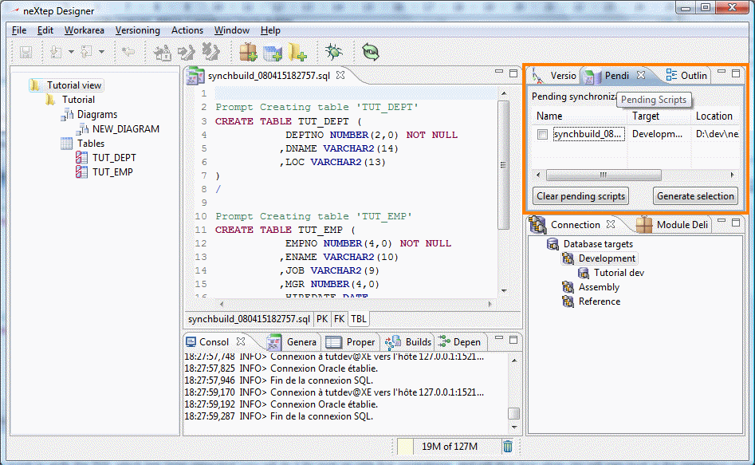
Check the script from the list and select Generate selection to submit it to your development database. The workbench will focus on the Generation Console to give you feedback from your script submission.
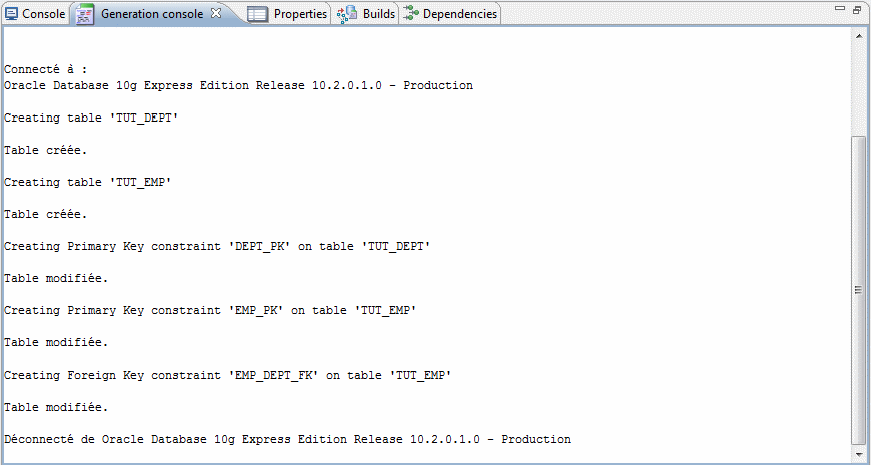
Note that after generating, the corresponding script is removed from the Pending scripts as it is no more “pending”. You should have a look to the view explorer as well to notice that, after submitting the script, your table items have changed from this :
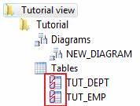
to this :
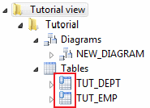
This little icon decorator indicates that those objects are synchronized between the designer repository and your development target. Only database objects could be synchronized with database, this is the reason why no decorator exists for diagrams or containers.